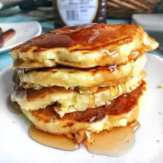

How To Make Pancakes
Make a trusty set of pancakes that won't fail to get you up in the morning
Prep: 5 mins
Cook: 15 mins
Total: 20 mins
Servings: 8
Yield: 8 servings
Ingredients
- 1 and-a-half cups all-purpose flour
- 3 and-a-half teaspoons baking powder
- 1/4 teaspoon salt, or more to taste
- 1 tablespoon white sugar
- 1 and-a-quarter cups milk
- 1 egg
- 3 tablespoons butter, melted
Directions
- In a large bowl, sift together the flour, baking powder, salt and sugar. Make a well in the center and pour in the milk, egg and melted butter; mix until smooth.
- Heat a lightly oiled griddle or frying pan over medium-high heat. Pour or scoop the batter onto the griddle, using approximately 1/4 cup for each pancake. Brown on both sides and serve hot.
Editor's Note:
The salt amount has been reduced based on review feedback. The original recipe called for 1 teaspoon.
Nutrition facts
Per Serving:158 calories; protein 4.5g; carbohydrates 21.7g; fat 5.9g; cholesterol 37.7mg; sodium 503.6mg.